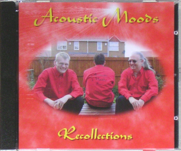

Samples
Freetime 2.1 (468KB)
Slinky (468KB)
|
Disc 1
1. Recollections (Dumigan/Ward/Coghill)
2. Jump To It (Dumigan/Ward/Coghill)
3. Fading Lights (Genesis)
4. Beverley's Falling Snowflakes (Ward)
5. Cuckoo Cocoon (Genesis)
6. Congo (Genesis)
7. Freetime 2.1 (Coghill/Dumigan/Ward)
8. Phantom Suite (Lloyd Webber arr. Dumigan)
9. Fires In Your Cities (Dumigan)
10, Stag (Dumigan)
11. Cute and Fluffy (Dumigan/Ward)
12. Tryptych (Dumigan)
Disc 2
1. Nivram (Marvin)
2. Happy Blues In 7/4 (Ward/Dumigan/Coghill)
3. For Heather (Dumigan)
4. Slinky (Dumigan)
5. A Winter's Tinkle (Dumigan/Ward/Coghill)
6. Little Pictures (Dumigan)
7. Follow You, Follow Me (Genesis)
8. Who Am I?/Legend (Dumigan)
9. A Trick of the Tail (Genesis)
10, Entangled (Genesis)
11. L for Leather (Coghill/Dumigan)
12. Suncatcher (Acoustic Moods)
|